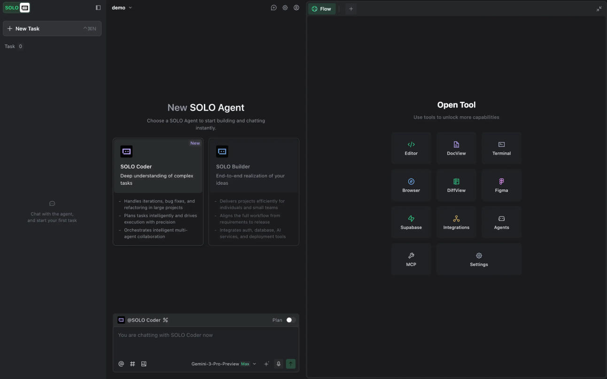
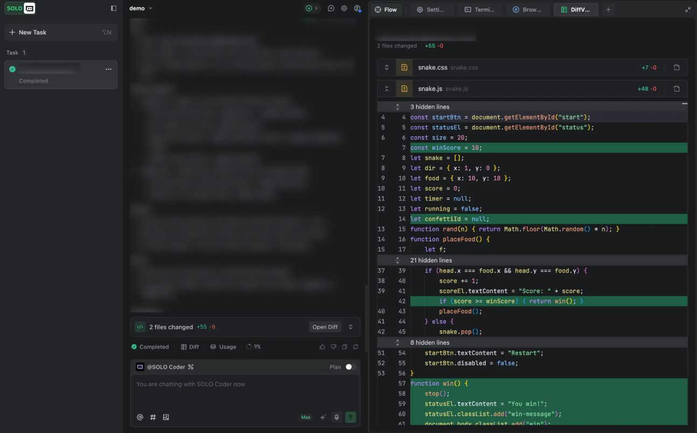
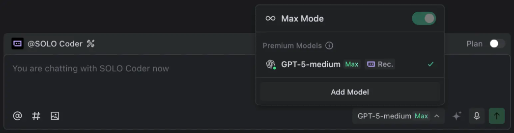

What is SOLO Mode?
With AI-driven at its core, SOLO mode enables AI to autonomously plan and execute the entire development process from requirement understanding, code generation, testing, to result preview and deployment.
In SOLO mode, you can input requirements through various ways, such as natural language descriptions, voice interactions, or uploading local files. The AI will independently break down tasks and execute them efficiently, greatly simplifying and streamlining the development process.
Note: In this aiHackathon, SOLO Coder is recommended over SOLO Builder for development.
Enable SOLO Mode
Use the mode switch toggle in the top-left corner to switch TRAE to SOLO mode.
UI
The interface of SOLO Mode is shown below. From left to right, it consists of the task management panel, the AI chat panel, and the tool panel.

SOLO Mode interface: task management panel, AI chat panel, and tool panels arranged from left to right
Features
SOLO Coder
SOLO Coder is an agent designed for complex project development. It enables you to efficiently complete the full development workflow, from requirements iteration to architecture refactoring.
Through intelligent task planning and precise execution mechanisms, SOLO Coder can automatically advance development after the plan is confirmed. At the same time, you can also autonomously orchestrate multiple agents to form your own AI team, achieve multi-role collaborative workflow, and accelerate project implementation.
Task management
The task management feature breaks the limitations of traditional serial task execution, supports managing multiple tasks simultaneously within a single project, and enhances overall development efficiency.
For more information on parallel task management and project organization, refer to the Multitasking page.
Tool panels
SOLO mode provides a range of built-in tools, including editor, documentation viewer, and browser, and more. You can use these tools to unlock more capabilities.
For more information on built-in tools and workflow integration, refer to the Tool Panel page.
Paid premium features are not permitted during the aiHackathon. This includes Figma AI, Supabase, Payment service integrations, and other subscription-based services. Participants should use free-tier services, local development, and built-in features only (Editor, DocView, Terminal, Browser, DiffView, Agents, MCP, Settings).
Ollama is available as a resource during the aiHackathon. If your solution requires AI models to power your application, you can use Ollama to run models locally. Ollama is included in the Survival Kit section — check there for quick access and setup guidance.
DiffView
After completing changes in your project, you can click the Open Diff button in the chat panel to open the DiffView window. This window displays:
- The number of affected files
- The total lines of code changed
- A list of modified files
You can click any file to view its specific changes, which are presented in a diff view.

Example workflow showing file changes with line-by-line diffs across the project
Custom models

Additional view of the SOLO mode interface and features
A customized model qwen3.6 is the designated model for the aiHackathon. Contestants are not permitted to use other models for development in TRAE and OpenCode.